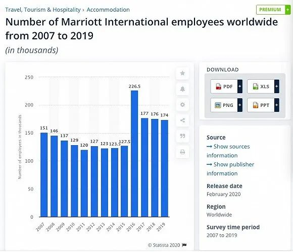
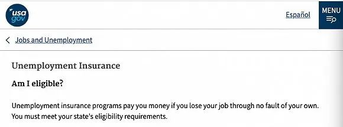

受疫情影响，希尔顿关停中国150家酒店
原文链接 备份链接 Photo by Serhii Maksymiv on Unsplash 记者：郑萃颖 “ 在2020年第一季度，预计疫情对调整后税息折旧及摊销前收益的影响在1000万美元至2000万美元。 ” 希尔顿集团近日发布 …

Photo by Michal Mrozek on Unsplash
记者：郑萃颖
“
万豪正在调整全球业务，许多酒店的员工将减少工作时间或暂时休假。
”
3月18日据彭博社报道，由于疫情冲击酒店业，万豪国际集团将有数万名酒店员工进行无薪休假。
该公司的发言人说，将为这些员工保留医疗福利，并表示，万豪正在关闭一些酒店，并且在仍开放运营的酒店中，需要的员工人数变少。
万豪旗下管理的酒店在美国有大约13万名员工。2019年全球员工数量则为17.4万人。目前尚不清楚万豪对其他市场是否采取类似政策。

statista.com在今年2月发布的统计数据，万豪国际集团2019年的全球员工数量在17.4万人
万豪在一份声明中说：“随着全球旅行限制和隔离防疫举措变得越来越普遍，我们正在经历全球住宿需求的显着下降，而且持续期限不确定。” “我们正在相应地调整全球业务，这意味着我们许多酒店的员工将减少工作时间或暂时休假。”
不过根据美国政府的失业补助申请规定，有资格申请失业补助的范围是，“并非因自己的过失而失去工作的员工”。这意味着休无薪假的员工也无法申请失业补助，可能暂时失去收入。

美国政府对失业补助申请的相关规定
2019年的统计数据，加上酒店加盟商，万豪在全球有7300家酒店，在酒店运营的营收上位于全球首位。
根据行业高管周二访问白宫时提交的一份数据，冠状病毒的爆发使美国酒店每周损失14亿美元，原因是疫情压垮了旅行需求。
在本周二，万豪行政总裁Arne Sorenson和美高梅国际度假村集团首席执行官James Murren都在寻求政府支持。
彭博社报道称，迪斯尼公司和希尔顿酒店集团的高管计划告诉美国政府，按当前价格计算，入住率的下降使酒店每天的客房收入损失超过2亿美元。
希尔顿全球酒店集团CEO周二在白宫该会议上表示，希尔顿计划关闭在美国主要城市的大部分酒店。目前集团已经关闭了纽约和华盛顿的部分酒店。
此前在2019年第四季度及全年财报分析会议上，希尔顿高管就提到已关闭中国地区大约150家希尔顿旗下酒店，共约33000间客房。
迪士尼已经停止了海上邮轮航线，并且关闭了中国的上海、香港，以及日本东京、法国巴黎，以及美国的2家迪士尼乐园。
美高梅国际集团则因为疫情，取消了2020年的盈利预期，认为新型冠状病毒疫情使其业绩前景难以预测。
根据美国酒店住宿协会的统计，这些行业将在未来几周内不得不裁掉100万个工作岗位。
美国酒店住宿协会发言人Jennifer Myers表示，酒店集团的管理者将着重强调保障员工的雇佣身份，并防止永久性裁员。酒店旅游业中提出的一些解决方案包括，为保留员工的公司的进行税收抵免，以及实施促进旅行的激励措施。
未经授权 禁止转载

原文链接 备份链接 Photo by Serhii Maksymiv on Unsplash 记者：郑萃颖 “ 在2020年第一季度，预计疫情对调整后税息折旧及摊销前收益的影响在1000万美元至2000万美元。 ” 希尔顿集团近日发布 …
原文链接 备份链接 图片来源：I.T 记者：张馨予 编辑：周卓然 “ I.T集团在2019年8月至年底裁员共300余人，如今集团又推出无薪假期计划。 ” 近日据多家香港媒体报道，香港潮流服饰零售商I.T集团在公司推行无薪假期计划，此前还有 …
原文链接 备份链接 2014年价格暴跌以来，全球石油行业的日子就不好过。2018年发生了价格过山车，2019年相对是个好年份， 2020年看来必须在需求不振和价格疲软的困境中艰难求生 图/IC 文 | 王能全 2019年以来，国际石油市场 …
原文链接 备份链接 2014年油价暴跌以来，全球石油行业的日子就不好过。2018年发生了价格过山车，2019年相对是个好年份， 2020年看来必须在需求不振和价格疲软的困境中艰难求生 图/IC *** 文 | 王能全*** 2019年以 …
原文链接 备份链接 记者：陈晓双 “ 陈峰曾表示，2020年是海航化解流动性风险的决胜之年。不过对于尾大不掉的海航而言，面对庞大的负债，资产处置和回归主业都显得举步维艰。 ” 新冠病毒肺炎疫情短期内对民航业产生巨大冲击。 民航局副局长李健 …